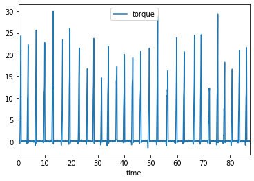
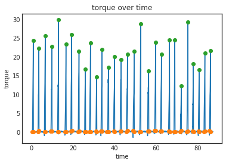

Working with measurement wheel data#
Import the worklab module
import os
import worklab as wl
Import the data with com.load() or the device specific load function:
filename = os.getcwd()
filename = os.path.join(os.path.split(filename)[0], 'example_data', 'Optipush_example.data')
mw_data = wl.com.load(filename)
print("Measurement wheel data is stored in a: ", type(mw_data))
================================================================================
Initializing loading for C:\Users\rick_\Development\worklab2\example_data\Optipush_example.data ...
File identified as Optipush datafile. Attempting to load ...
Data loaded!
================================================================================
Measurement wheel data is stored in a: <class 'pandas.core.frame.DataFrame'>
The DataFrame contains all the information from the file, but nothing extra:
mw_data.columns
Index(['time', 'fx', 'fy', 'fz', 'mx', 'my', 'torque', 'angle'], dtype='object')
Before getting more infos it would be a good idea to apply some filtering:
mw_data = wl.kin.filter_mw(mw_data)
Now let’s get more infos:
mw_data = wl.kin.process_mw(mw_data)
mw_data.head()
| time | fx | fy | fz | mx | my | torque | angle | aspeed | speed | dist | acc | ftot | uforce | force | power | work | |
|---|---|---|---|---|---|---|---|---|---|---|---|---|---|---|---|---|---|
| 0 | 0.000 | 2.838031 | 1.753805 | -4.058034 | 0.004851 | 0.005135 | -0.054472 | 3.673093 | 3.352298 | 1.039212 | 0.000000 | 2.535617 | 5.253370 | -0.198079 | -0.175715 | -0.182605 | -0.000913 |
| 1 | 0.005 | 2.401395 | 1.666210 | -4.385999 | -0.002135 | 0.004741 | -0.058072 | 3.689854 | 3.393195 | 1.051890 | 0.005228 | 3.594796 | 5.270667 | -0.211171 | -0.187329 | -0.197050 | -0.000985 |
| 2 | 0.010 | 1.963322 | 1.620943 | -4.642096 | -0.006774 | 0.002821 | -0.060339 | 3.707025 | 3.468259 | 1.075160 | 0.010545 | 4.264677 | 5.294445 | -0.219414 | -0.194642 | -0.209271 | -0.001046 |
| 3 | 0.015 | 1.527743 | 1.645536 | -4.771329 | -0.007243 | -0.001333 | -0.060383 | 3.724537 | 3.530765 | 1.094537 | 0.015970 | 3.537893 | 5.273269 | -0.219573 | -0.194782 | -0.213197 | -0.001066 |
| 4 | 0.020 | 1.104789 | 1.748478 | -4.743367 | -0.002454 | -0.007348 | -0.058016 | 3.742333 | 3.582384 | 1.110539 | 0.021482 | 2.901078 | 5.174675 | -0.210967 | -0.187148 | -0.207835 | -0.001039 |
That’s more like it!
mw_data.plot("time", "torque");

Let’s see if we can find some pushes in these data:
pushes = wl.kin.push_by_push_mw(mw_data)
print(f"There are {len(pushes)} complete pushes in the data")
pushes.head()
There are 29 complete pushes in the data
| stop | start | peak | tstart | tstop | tpeak | cangle | ptime | meanpower | maxpower | meantorque | maxtorque | meanforce | maxforce | work | feff | slope | ctime | reltime | |
|---|---|---|---|---|---|---|---|---|---|---|---|---|---|---|---|---|---|---|---|
| 0 | 195 | 97 | 176 | 0.485 | 0.975 | 0.88 | 1.676823 | 0.490 | 36.376315 | 94.426828 | 10.559981 | 24.357933 | 38.399932 | 88.574302 | 18.006276 | 55.197071 | 61.665653 | 2.695 | 18.181818 |
| 1 | 735 | 636 | 718 | 3.180 | 3.675 | 3.59 | 1.630329 | 0.495 | 36.170961 | 86.937413 | 10.449778 | 22.283936 | 37.999192 | 81.032495 | 18.085480 | 52.638096 | 54.351063 | 3.095 | 15.993538 |
| 2 | 1349 | 1255 | 1330 | 6.275 | 6.745 | 6.65 | 1.601879 | 0.470 | 45.783597 | 102.833058 | 12.917944 | 25.623400 | 46.974343 | 93.175999 | 21.747209 | 63.410359 | 68.329066 | 3.130 | 15.015974 |
| 3 | 1994 | 1881 | 1972 | 9.405 | 9.970 | 9.86 | 1.781313 | 0.565 | 33.413155 | 86.508159 | 10.060917 | 22.747502 | 36.585153 | 82.718191 | 19.045498 | 56.930325 | 49.994511 | 3.190 | 17.711599 |
| 4 | 2629 | 2519 | 2612 | 12.595 | 13.145 | 13.06 | 1.897524 | 0.550 | 43.382667 | 118.642142 | 12.244082 | 29.976050 | 44.523935 | 109.003817 | 24.077380 | 61.715078 | 64.464623 | 3.590 | 15.320334 |
You can achieve the exact same thing using the auto_process function. Which chains the above operations into one monolithic function and returns the data and the pushes, as such:
mw_data, pushes = wl.kin.auto_process(mw_data, *args, **kwargs)
Now make a Christmas tree!
wl.plots.plot_pushes(mw_data, pushes);

Magnificent! 😍